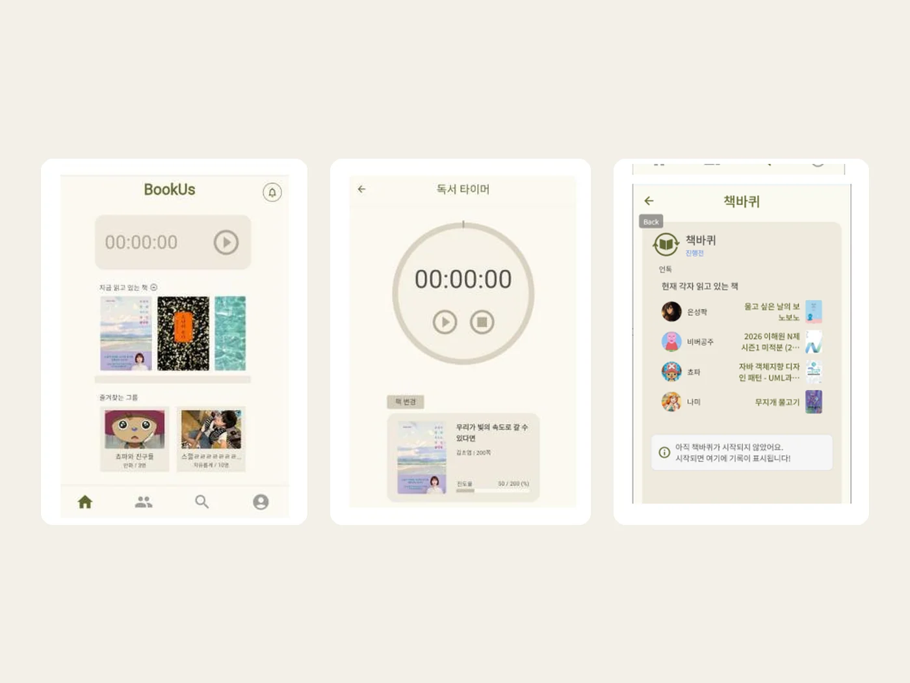
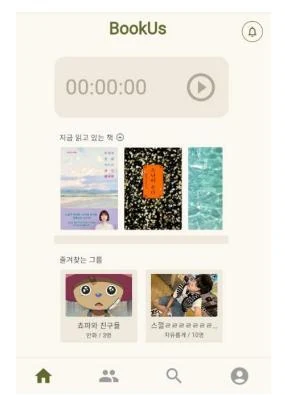
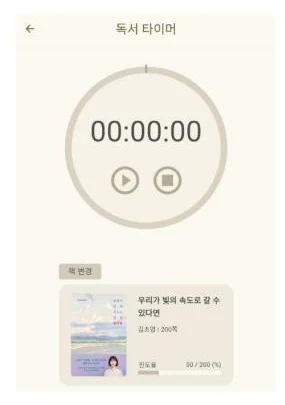
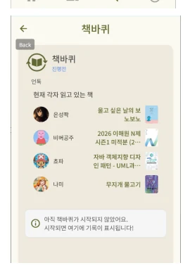

2025.1 · UNTOC CAMP
BookUs
독서 기록과 모임 운영, 책 교환 과정을 하나의 흐름으로 연결한 모바일 앱입니다.
- 역할
- PM · Frontend · Backend
- 기술
- Flutter · FastAPI · MySQL
- 형태
- Mobile Application

01
프로젝트 설명
친구들의 독서클럽에서 책을 교환할 때 이미 읽은 책이 다시 배정되고, 구성원의 기록이 흩어지는 문제를 발견했습니다. BookUs는 개인의 독서 기록과 그룹 활동을 연결해 읽는 과정 전체를 관리합니다.
타이머·진행률·잔디 심기로 독서 시간과 독서량을 확인하고, 한줄평·기억하고 싶은 문장·메모를 남길 수 있습니다. 모임 게시판에서는 그룹을 만들거나 가입해 서로의 기록을 공유합니다. 핵심 기능인 책바퀴는 이미 읽은 책을 제외하고 구성원에게 다음 책을 배정해 책을 자연스럽게 돌려 읽도록 돕습니다.
02
나의 역할
- PM앱 기능과 사용자 흐름을 기획하고 팀원의 의견을 조율했습니다.
- Backend독서 기록·진행률·잔디 심기·게시판·그룹·메모·책바퀴 기능을 구현했습니다.
- Frontend책바퀴와 그룹 게시판 화면 및 상호작용을 구현했습니다.
03
결과
2025년 1학기 UNTOC CAMP 1위실제 독서 모임의 운영 경험을 제품 기능으로 구체화했습니다.
04
주요 화면
홈 · 독서 타이머 · 책바퀴

